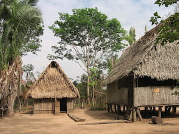

Pucallpa is a very beautiful place that belong to Peru, It is located in the jungle being one of the most bigest states here, there is very common to see animal everywhere you walk and it is because much people love animals and the environment has made animals to treat much with humans. In conclution, many people have a great environment and share that feeling of happyness.
Many people there have learnt that what is the most important there is the family, the health and God. For this reason they tend to be good people serving one to one
